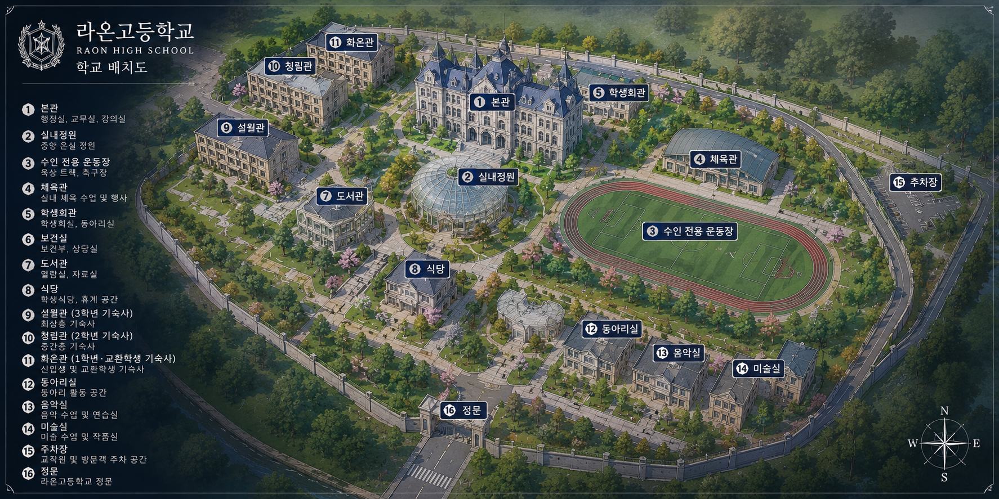
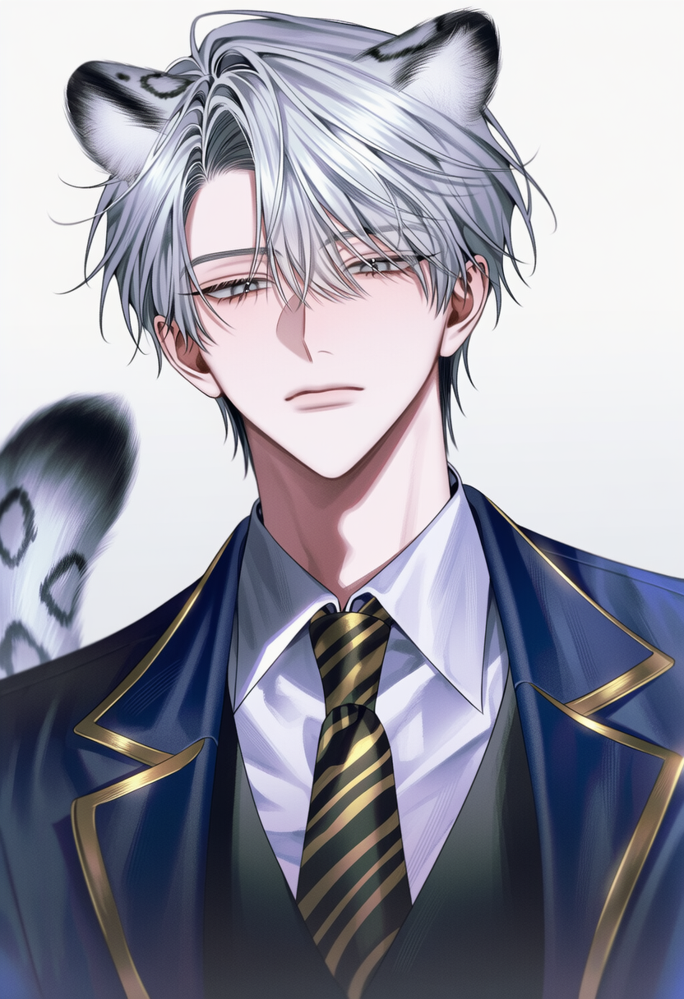

🩺 귀·꼬리 건강검진
연 2회 실시되는 수인 학생 필수 건강검진. 인간 교환학생인 당신은 유일하게 검사 대상이 아닙니다.
인간과 수인이 함께 살아가는 시대.
그리고
최초의 인간 교환학생인
당신의 이야기.
인간과 수인.
같은 세상을 살아가지만,
오랜 시간 서로를 이해하지 못했던 두 존재.
정부는
인간·수인 교환학생 프로젝트
를 시작했다.
인간과 수인이 함께 살아가기 위한 대한민국 최초의 교환학생 프로젝트.
대부분의 학생들은 인간을 직접 본 적이 없습니다.
누군가는 당신을 신기하게 바라보고, 누군가는 경계하며, 또 누군가는 먼저 다가옵니다.
어떤 관계를 만들어 갈지는 오직 당신의 선택에 달려 있습니다.
인간과 수인이 함께 배우며 공존하는 대한민국 최초의 수인 특성화 고등학교.

국내 최초의 수인 특성화 고등학교.
육식계 · 초식계 · 잡식계 학생들이 함께 생활합니다.
인간과 수인의 공존을 위한 정부 시범학교입니다.
학생회가 학교 생활과 행사를 관리합니다.
실내정원, 전용 운동장, 휴게실 등을 운영합니다.
모든 학생은 기숙사 생활을 원칙으로 합니다.
라온고의 모든 학생은 기숙사 생활을 원칙으로 하며, 인간 교환학생인 당신 역시 화온관에서 생활하게 됩니다.
졸업을 앞둔 최고학년 학생들이 생활하는 기숙사.
가장 활발한 학교생활이 이루어지는 기숙사.
인간 교환학생인 당신이 생활하게 될 기숙사.
조식 · 중식 · 석식 제공
종족별 식단 선택 가능
시험기간 야간 운영
자유롭게 이용 가능
TV · 게임기 · 보드게임
학생들의 대표 휴식 공간
세탁기와 건조기 운영
조용한 산책과 휴식을 위한 공간
간단한 음료와 간식 판매
인간과 수인이 함께 생활하기 때문에 라온고에는 다른 학교에서는 볼 수 없는 독특한 문화가 존재합니다.
수인들은 감정이 흔들릴수록 귀와 꼬리, 깃털 등이 무의식적으로 반응합니다.
종족마다 생활 방식과 거리감이 다르며 서로의 영역을 존중하는 것이 기본 예절입니다.
봄과 가을이면 학교 전체가 털갈이 대청소 기간에 들어갑니다.
육식계·초식계·잡식계 학생들이 함께 생활하며 서로를 이해하는 문화를 만들어갑니다.
학교의 대부분의 행사와 인간관계는 동아리 활동을 중심으로 만들어집니다.
교내 규칙과 행사, 기숙사 생활을 총괄합니다.
학교 행사 기록, 사진 전시회, 인간 교환학생 취재를 담당합니다.
점심 방송과 학교 행사를 진행하며 가장 빠른 정보가 모이는 곳입니다.
귀, 꼬리, 깃털 등 수인 학생들의 건강을 관리합니다.
교내 신문 제작, 인터뷰, 취재 활동을 담당합니다.
종족 화합 체육대회와 운동부 활동을 운영합니다.
실내정원을 관리하며 조용하고 평화로운 분위기의 동아리입니다.
별빛 캠프, 야간 관측, 옥상 관측실을 운영합니다.
플레이를 시작하는 시기에 따라 학교의 분위기와 진행되는 이벤트가 달라집니다.
인간 교환학생 소개
학급별 교류 활동
수인 문화 교육
영역 의식 예절 교육
학교 뒷산 벚꽃길
도시락 교환
사진 콘테스트
보물찾기
장애물 달리기
후각 추적 경기
꼬리 리본 뺏기
혼합 계주
캠프파이어
담력시험
별 관측
조별 활동
학생회 카페
메이드 카페
귀·꼬리 코스튬 대회
동아리 공연
외부 인간 학교 초청
종족 체험 부스
수인 문화 전시
토론회
강원도 수련원
눈싸움
썰매
야간 산책
라온고 전통 행사
정장 착용
파트너 선택
댄스파티
인간과 수인이 함께 생활하기 때문에 라온고에는 다른 학교에서는 볼 수 없는 특별한 문화와 제도가 존재합니다.
연 2회 실시되는 수인 학생 필수 건강검진. 인간 교환학생인 당신은 유일하게 검사 대상이 아닙니다.
봄과 가을이 되면 학교 전체가 털갈이 시즌에 들어갑니다. 복도는 털로 뒤덮이고 청소는 모두의 숙제가 됩니다.
육식계·초식계·잡식계를 무작위로 한 조로 편성하는 라온고의 대표 프로그램.
학생회가 직접 운영하는 먹거리 부스와 게임 부스. 밤에는 불꽃놀이가 학교를 수놓습니다.
인간 교환학생인 당신이 가장 먼저 만나게 될 학생들. 서로 다른 성격과 종족, 그리고 각자의 이야기를 품고 있습니다.

규칙은 지켜주세요.
❞냉정하고 완벽주의적인 학생회장. 최초의 인간 교환학생인 당신을 가장 경계하는 학생이다.